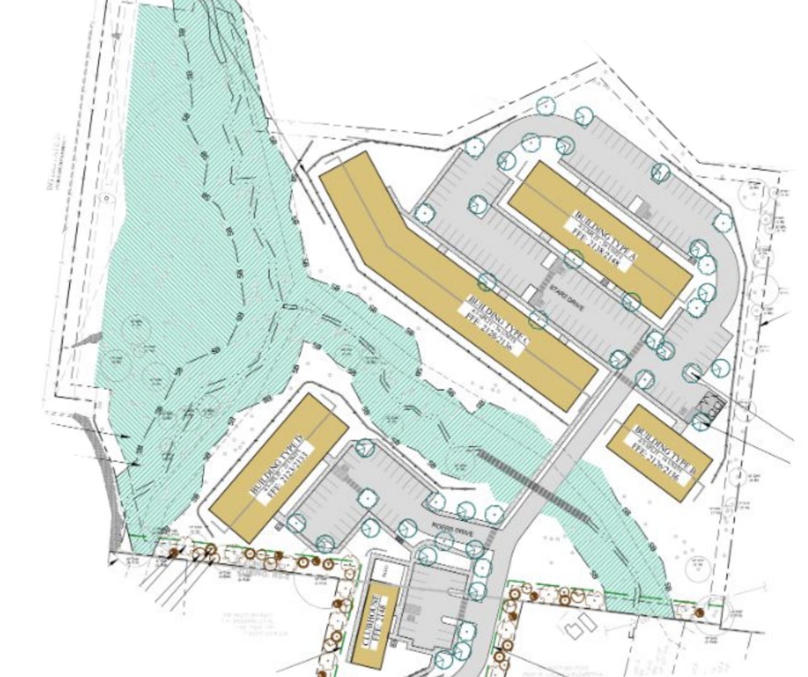

Asheville City Council - February 25th Meeting
March 3, 2025
Here’s what we found to be the most important housing-related items at Asheville’s City Council meeting of Tuesday, February 25, 2025.
Prologue: What Is a Conditional Zoning Request?
The two items we want to highlight from the last City Council meeting were both “conditional zoning” requests. So what does that mean?
A “conditional zoning” request is what happens when a developer wants to build something, but their plans include parameters that aren’t normally allowed in the place where they want to build. Instead of being able to build “by right,” the builder is required to ask City Council to review the case, at their discretion, and then City Council approves or denies the project by taking a vote.
It’s worth nothing that these projects most often break the “rules” because the city’s overly restrictive zoning code hasn’t been updated since the 1990s, and is out of step with the city government’s own stated development priorities. In fact, it is customary for those making conditional zoning requests to argue their case based on the city’s own “future land use” goals that were established in Asheville’s most recent comprehensive plan.
(The city has a website with some information about what conditional zoning requests are, and how they relate to other kinds of permittings here.)
Conditional Zoning: “Pine Lane Project” near Brevard Road
Asheville For All Position: In Support 👍
Outcome: Approved
Votes:
Unanimous in favor
This first conditional zoning request on February 25th was a less than usual case, because it’s a proposal to build an apartment complex with entirely below-market-rate homes. In other words, these homes are all income-restricted to individuals or families making well below the median area income.

Council actually had two separate votes to make on this one: first, to approve money from the city’s “Housing Trust Fund” to aid the project; and second, a conditional request to approve the actual proposed physical characteristics of the development.
(You can learn more about Asheville’s Housing Trust Fund here.)
The money from the Housing Trust Fund had actually already been approved by Council last year, and this new vote for the funds was something of a technical matter. Both the funds and the conditional zoning were ultimately approved on Tuesday, both unanimously.
Conditional Zoning: 3183 Sweeten Creek Road
Asheville For All Position: In Support 👍
Outcome: Approved
Votes:
In favor: Esther E. Manheimer, Bo Hess, S. Antanette Mosley, Sheneika Smith, Kim Roney
Against: Sage Turner, Maggie Ullman
The second conditional zoning request was for another multifamily complex.
This one is planned to feature more than three hundred homes, ranging from one-bedrooms to larger townhomes.
When it comes to large apartment complexes, Asheville City Council often finds it easier to approve those that feature subsidized housing than when they are solely market-rate. In this case, various councilors expressed concerns over the location—Sweeten Creek Road is by no means the ideal spot—as well as the fact that there are existing homes on the site slated for redevelopment.
(You can read Asheville For All’s letter advocating for both projects here on our blog. On the topic of the existing tenants at 3183 Sweeten Creek Road, here’s our position, briefly. While we believe that Asheville must adopt policies that would provide working families with both greater stability and greater mobility, preventing this conditional zoning from going through would by no means guarantee protection for the existing tenants at 3183 Sweeten Creek, even in the short term. And in the long term, it would only deepen our city’s housing problem.)
Councilors requested some tweaks to the project as a condition for approval, including some wider sidewalks. (This is why it’s called “conditional” zoning.) Ultimately, the measure passed 5-2, with Sage Turner and Maggie Ullman voting against the proposed project.
What’s Next?
Let’s go back to that location concern.
We said that Sweeten Creek Road isn’t the ideal spot for housing, and here’s what we mean. The best places for cities to grow, as a general rule, are those places with the greatest access to jobs, schools, public transportation, and amenities. This doesn’t mean that we shouldn’t build more housing on Sweeten Creek Road. It’s possible that dozens, if not hundreds of people, that drive on Sweeten Creek Road each day for their commute are driving past 3183 Sweeten Creek Road because they can’t easily afford housing closer to the city. So having more housing there may mean shorter commutes, and therefore—believe it or not—less traffic south of the site.
We think it’s important to note that there are currently more comprehensive zoning reforms that are in a holding pattern with City Council, and were these proposed zoning code amendments to be passed, we would likely see a greater supply of infill housing in our city’s core, high-demand neighborhoods and corridors, and therefore less viability, or less demand from builders, for putting housing in those more peripheral spots. Spots like Brevard Road and Sweeten Creek Road south of I-40, which are perfectly OK to grow, but perhaps at a less intensive pace than we may be seeing now, as more close-to-downtown neighborhoods are effectively off-limits to infill.
These comprehensive zoning code amendments, which we advocated for last month, have been rescheduled for the March 11th City Council meeting. And the votes undertaken there will be of greater consequence than any one single conditional zoning request.
Concluding Notes
Nevertheless, we were most happy to see these conditional zonings passed. Having more subsidized, below-market-rate homes, AND having more market-rate homes, means more housing options overall for ALL kinds of individuals and families that live and work in and around the Asheville area. And it’s a check against sprawl into neighboring counties.
Thanks to the councilors that put the “good” ahead of the “perfect” in voting for both of these conditional zoning requests. And we hope the pro-housing momentum continues into the next Asheville City Council meeting.